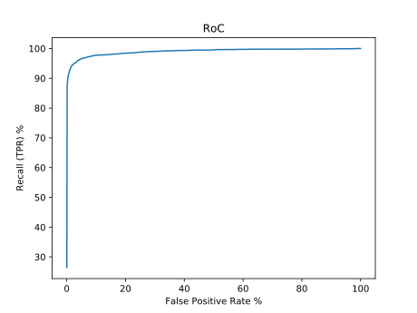

Description:
This is a baseline method base on Sparse Radial Sampling Local Binary Patterns SRS-LBP. For more details, refer, to Sparse Radial Sampling LBP for Writer Identification download. In this variant, defferent PCA components were extracted from the retrieval database for every query and applied to both query and retrieval database.Submissions:

mAP: 82.97
Precision: 44.28
Recall: 88.56
F-score: 59.04